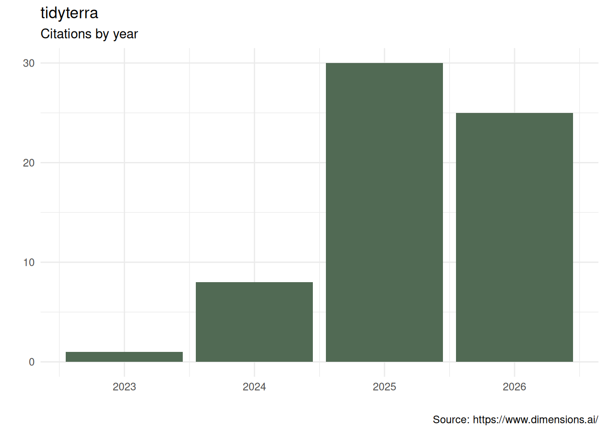

Please cite tidyterra as:
Hernangómez, D. (2023). Using the tidyverse with terra objects: the tidyterra package. Journal of Open Source Software, 8(91), 5751, https://doi.org/10.21105/joss.05751.
A BibTeX entry for LaTeX users is:
@article{Hernangómez2023,
doi = {10.21105/joss.05751},
url = {https://doi.org/10.21105/joss.05751},
year = {2023},
publisher = {The Open Journal},
volume = {8},
number = {91},
pages = {5751},
author = {Diego Hernangómez},
title = {Using the {tidyverse} with {terra} objects: the {tidyterra} package},
journal = {Journal of Open Source Software}
}Publications
Aramburu, Ana, Núria Beltran-Sanz, José Raggio, et al. 2026. “Islands of Biodiversity: Characterization of Lichen Flora in Antarctic Nunataks.” Journal of Fungi 12 (5): 314. https://doi.org/10.3390/jof12050314.
Bahlburg, Dominik, Sebastian Menze, Bjørn A. Krafft, Andy D. Lowther, and Bettina Meyer. 2025. “Mapping Encounters Between Antarctic Krill Fishing Vessels and Air-Breathing Krill Predators Using Acoustic Data from the Fishery.” Proceedings of the National Academy of Sciences 122 (25): e2417203122. https://doi.org/10.1073/pnas.2417203122.
Bausilio, Giuseppe, Diego Di Martire, Vincenzo Allocca, et al. 2026. “Integrated Analysis for a Resilient Urban Planning Using Ensemble Modeling and Machine Learning Algorithms.” International Journal of Disaster Risk Reduction 138 (May): 106124. https://doi.org/10.1016/j.ijdrr.2026.106124.
Bionda, Arianna, Alessio Negro, Silverio Grande, and Paola Crepaldi. 2025. “Mapping Risks and Landscapes: Conservation Insights for Italian Small Ruminant Populations.” Pastoralism: Research, Policy and Practice 15 (September): 14997. https://doi.org/10.3389/past.2025.14997.
Buma, Brian. 2024. “Including Non-Growing Season Emissions of N_2O in US Maize Could Raise Net CO_2e Emissions by 31% Annually.” Agricultural & Environmental Letters 9 (2): e20146. https://doi.org/10.1002/ael2.20146.
Coffey, Matthew L., and Andrew M. Simons. 2025. “The Spatial Distribution of a Hummingbird-Pollinated Plant Is Not Strongly Influenced by Hummingbird Abundance.” American Journal of Botany 112 (5): e70034. https://doi.org/10.1002/ajb2.70034.
Copot, Ovidiu, and Asko Lõhmus. 2026. “Assessment of Multiple Outcomes of Habitat Models Can Significantly Affect Conservation Decisions for Threatened Species.” Scientific Reports 16 (1): 5860. https://doi.org/10.1038/s41598-026-35987-4.
Cordero, Elvin, Roy Ruiz Vélez, Víctor Huérfano Moreno, and Clark Sherman. 2025. “Enhancing Tsunami Evacuation Strategies in Puerto Rico Using Open-Source Least-Cost Path Analysis.” Journal of Disaster Science and Management 1 (1): 18. https://doi.org/10.1007/s44367-025-00018-y.
Di Fabio, Alessandro, Samuel Aspalter, Debojyoti Chakraborty, et al. 2026. “Growth Performance Is Driven by Site Conditions and Moderated by Functional Trait Plasticity in Quercus Robur and Prunus Avium.” Ecology and Evolution 16 (2): e72978. https://doi.org/10.1002/ece3.72978.
Di Fabio, Alessandro, Valentina Buttò, Debojyoti Chakraborty, Gregory A. O’Neill, Silvio Schueler, and Juergen Kreyling. 2024. “Climatic Conditions at Provenance Origin Influence Growth Stability to Changes in Climate in Two Major Tree Species.” Frontiers in Forests and Global Change 7 (July): 1422165. https://doi.org/10.3389/ffgc.2024.1422165.
Drozdova, Polina, Zhanna Shatilina, Ekaterina Telnes, et al. 2025. “Prezygotic and Postzygotic Reproductive Incompatibilities Complement Each Other in the Formation of a Cryptic Amphipod Species: The Example of a Lake Baikal Species Complex Eulimnogammarus Verrucosus.” Diversity 17 (11): 781. https://doi.org/10.3390/d17110781.
Elio Medina, Javier, Frida Vermina Plathner, Elsa Pastor, and Nieves Fernandez-Anez. 2025. “How to Approach the Definition of WUI in Northern Europe.” Fire and Materials 49 (5): 787–804. https://doi.org/10.1002/fam.3264.
Fard, Pedram, Jonas Hügel, Risto Conte Keivabu, et al. 2025. “Developing a Spatiotemporal Repository of Extreme Heat and Cold Exposure in the United States for Precision Public Health Research.” Environmental Science & Technology 59 (37): 19872–84. https://doi.org/10.1021/acs.est.5c03658.
Fu, Fengyu, Shuai Wang, Xutong Wu, et al. 2025. “Integrating Hydrological Impacts for Cost-Effective Dryland Ecological Restoration.” Communications Earth & Environment 6 (1): 667. https://doi.org/10.1038/s43247-025-02649-8.
Gao, Yan, Nestor Añez, and Luis Fernando Chaves. 2026. “High Spatial Resolution Ensemble Species Distribution Modeling of Rhodnius prolixus, Vector of Chagas Disease, in Western Venezuela.” GeoHealth 10 (5): e2025GH001628. https://doi.org/10.1029/2025GH001628.
García-Alvarado, Juan José, Miguel Pestano-González, Cristina González-Montelongo, Agustín Naranjo-Cigala, and José Ramón Arévalo. 2025. “Assessing the Potential Risk of Invasion of the Neophyte Pluchea Ovalis (Pers.) DC. (Asteraceae) in the Canarian Archipelago Using an Ensemble of Species Distribution Modelling.” Diversity 17 (3): 195. https://doi.org/10.3390/d17030195.
Hallet, Madeline E., Richard A. Phillips, Ian J. Maywar, and Lesley H. Thorne. 2026. “Wind, Waves, Wing Loading and the Flight Energetics of Giant Petrels.” Functional Ecology 40 (7): 1979–93. https://doi.org/10.1111/1365-2435.70352.
Hattendorf, Carolin, and Renke Lühken. 2025. “Vectors, Host Range, and Spatial Distribution of Dirofilaria Immitis and D. repens in Europe: A Systematic Review.” Infectious Diseases of Poverty 14 (1): 58. https://doi.org/10.1186/s40249-025-01328-2.
Herrera-Lopera, Jorge Mario, Mirco Solé, and Carlos A. Cultid-Medina. 2025. “Mapping the Missing: Assessing Amphibian Sampling Completeness and Overlap with Global Protected Areas.” Ecology and Evolution 15 (5): e71137. https://doi.org/10.1002/ece3.71137.
Hinckley, Arlo, Gonzalo E. Pinilla-Buitrago, Jesús E. Maldonado, et al. 2025. “Pliocene Forest Fragmentation Shaped Speciation in Tropical Asia’s Giant Squirrels (Ratufa).” Molecular Ecology 34 (24): e70179. https://doi.org/10.1111/mec.70179.
Jones, Max D., Ryan J. Almeida, Rachel Boratto, et al. 2026. “Long Lives, Short Futures: Freshwater Turtle and Tortoise Imports to the United States Highlight Global Trade and Conservation Challenges.” Biological Conservation 321 (September): 111966. https://doi.org/10.1016/j.biocon.2026.111966.
Jones, Max Dolton. 2025. “Saur and Decline: Patterns in Lizard Imports to the US (2000-2022).” PLOS ONE 20 (10): e0333746. https://doi.org/10.1371/journal.pone.0333746.
Kassim, Yussif Baba, Francisco Pinto, Dilys S. MacCarthy, et al. 2025. “Can Drone Images Predict Within-Field Variability in Soil Fertility? A Case Study in the Northern Region of Ghana.” Frontiers in Soil Science 5 (June): 1548645. https://doi.org/10.3389/fsoil.2025.1548645.
Kiel, Nathan G., David A. Watts, Amanda B. Young, and Mark Vellend. 2025. “Snowmelt Timing Alters the Phenology but Not the Performance of an Understory Spring Ephemeral Plant.” Journal of Ecology 113 (9): 2289–300. https://doi.org/10.1111/1365-2745.70099.
Kiziridis, Diogenis A., Ilias Karmiris, and Dimitrios Fotakis. 2026. “Agroforestry Optimisation for Climate Policy: Mapping Silvopastoral Carbon Sequestration Trade-Offs in the Mediterranean.” Sustainability 18 (1): 439. https://doi.org/10.3390/su18010439.
Kutza, Alex D., Zoe L. Hert, and Leonie C. Moyle. 2026. “Endemic and Invasion Dynamics of Wild Tomato Species on the Galápagos Islands, Across Two Centuries of Collection Records.” New Phytologist 251 (2): 737–51. https://doi.org/10.1111/nph.70321.
Larocca Conte, Gabriele, Lucia Zuvela, Rachel Cruz-Pérez, et al. 2026. “Lowland Tropical Forests Remain a Methane Sink Under Warming and Long-Term Hurricane Disturbance Recovery.” Agricultural and Forest Meteorology 386 (July): 111225. https://doi.org/10.1016/j.agrformet.2026.111225.
Lebron, Inma, Christopher J. Feeney, Sabine Reinsch, et al. 2025. “Patterns and Thresholds for Soil pH Across Europe in Relation to Soil Health and Degradation.” CATENA 260 (December): 109454. https://doi.org/10.1016/j.catena.2025.109454.
Lee, Finnbar, Ian A. K. Kusabs, George L. W. Perry, and Calum MacNeil. 2025. “Identifying Refugia from the Synergistic Threats of Climate Change and Invasive Species.” Web Ecology 25 (2): 221–39. https://doi.org/10.5194/we-25-221-2025.
Lindgren, Finn, Fabian Bachl, Janine Illian, Man Ho Suen, Håvard Rue, and Andrew E. Seaton. 2024. inlabru: Software for Fitting Latent Gaussian Models with Non-Linear Predictors. https://doi.org/10.48550/arXiv.2407.00791.
Lühken, Renke, Leif Rauhöft, Björn Pluskota, et al. 2024. “High Vector Competence for Chikungunya Virus but Heavily Reduced Locomotor Activity of Aedes Albopictus from Germany at Low Temperatures.” Parasites & Vectors 17 (1): 502. https://doi.org/10.1186/s13071-024-06594-x.
Macey, John N., Jane M. Kunberger, Kellene Collins, et al. 2026. “Miniaturized Light-Level Geolocators Provide Novel Insight into the Migration Ecology of an Endangered Songbird.” Movement Ecology 14 (1): 13. https://doi.org/10.1186/s40462-026-00626-0.
Maitner, Brian S., Robert L. Richards, Ben S. Carlson, John M. Drake, and Cory Merow. 2026. “Flexible Methods for Species Distribution Modeling with Small Samples.” Ecography 2026 (2): e08112. https://doi.org/10.1002/ecog.08112.
Mallory, Mark L., Seth MacLean, Julia E. Baak, et al. 2025. “Mercury in Eastern Coyotes from Nova Scotia, Canada: Effects of Geography and Trophic Position.” Science of The Total Environment 974 (April): 179186. https://doi.org/10.1016/j.scitotenv.2025.179186.
Maravall-López, Javier, Josefina M. B. Motti, Nicolás Pastor, et al. 2026. “Eight Millennia of Continuity of a Previously Unknown Lineage in Argentina.” Nature 649 (8097): 647–56. https://doi.org/10.1038/s41586-025-09731-3.
Masson, Simon, Matteo Chialva, Davide Bongiovanni, Martino Adamo, Irene Stefanini, and Luisa Lanfranco. 2025. “A Systematic Scoping Review Reveals That Geographic and Taxonomic Patterns Influence the Scientific and Societal Interest in Urban Soil Microbial Diversity.” Environmental Microbiome 20 (1): 17. https://doi.org/10.1186/s40793-025-00677-7.
Merlin, Morgane, Barry Gardiner, and Svein Solberg. 2026. “Predicting the Risk of Individual Tree Fall Along Powerlines in Norway with a Mechanistic Wind Risk Model and Machine Learning.” Natural Hazards and Earth System Sciences 26 (5): 2461–85. https://doi.org/10.5194/nhess-26-2461-2026.
Merlin, Morgane, Tommaso Locatelli, Barry Gardiner, and Rasmus Astrup. 2025. “Large-Scale Modelling Wind Damage Vulnerability Through Combination of High-Resolution Forest Resources Maps and ForestGALES.” Forest Ecosystems 14 (December): 100361. https://doi.org/10.1016/j.fecs.2025.100361.
Mohammed, Ibrahim. 2024. NASAaccess: Downloading and Reformatting Tool for NASA Earth Observation Data Products. National Aeronautics; Space Administration, Goddard Space Flight Center. https://github.com/nasa/NASAaccess.
Moreira, Hadassa, Sharon D. Janssen, Koen J. J. Kuipers, et al. 2026. “Combined Threats of Land Use, Climate Change and Nitrogen Deposition to Global Vascular Plant Diversity.” Global Ecology and Conservation 69 (September): e04307. https://doi.org/10.1016/j.gecco.2026.e04307.
Moulatlet, Gabriel M., Cory Merow, Brian Maitner, et al. 2025. “General Laws of Biodiversity: Climatic Niches Predict Plant Range Size and Ecological Dominance Globally.” Proceedings of the National Academy of Sciences 122 (46): e2517585122. https://doi.org/10.1073/pnas.2517585122.
Nityagovsky, Nikolay N., Alexey A. Ananev, Andrey R. Suprun, et al. 2024. “Distribution of Plasmopara Viticola Causing Downy Mildew in Russian Far East Grapevines.” Horticulturae 10 (4): 326. https://doi.org/10.3390/horticulturae10040326.
Pérez-Girón, José Carlos, José Vicente López-Bao, Emilio Díaz-Varela, and Pedro Álvarez-Álvarez. 2025. “Predicting Climate-Related Compositional Shifts in Nut-Producing Species That Are Important for Bears During Hyperphagia.” Frontiers in Forests and Global Change 8 (August): 1624612. https://doi.org/10.3389/ffgc.2025.1624612.
Read, Freya R., Rachel J. Warmington, and Colin M. Beale. 2026. “Assessing Protected Areas as Climate Refugia for Threatened Plant Species in Britain.” PLOS ONE 21 (1): e0332485. https://doi.org/10.1371/journal.pone.0332485.
Riley, Andrew C., Michael Wright, Teresita M. Porter, V. Carley Maitland, Donald J. Baird, and Mehrdad Hajibabaei. 2025. “Biomonitoring 2.0 Refined: Observing Local Change Through Metaphylogeography Using a Community-Based eDNA Metabarcoding Monitoring Network.” BMC Biology 23 (1): 187. https://doi.org/10.1186/s12915-025-02284-x.
Rock, Linnea A., William W. Fetzer, Lindsay S. Patterson, et al. 2025. “Spatiotemporal Drivers of Water Quality and Phytoplankton Communities in a Cyanobacteria-Dominated Reservoir Provide Management Insights.” Environmental Monitoring and Assessment 197 (7): 795. https://doi.org/10.1007/s10661-025-14258-1.
Salvador Baiges, Guillem. 2024. “Clima, Orografia i Dinàmiques de Poblament Al Pirineu Central. Arqueologia, SIG i Modelització Espacial Del Patró d’ocupació Del Territori Durant El Neolı́tic (5700–2100 Cal ANE).” PhD thesis, Universitat Autònoma de Barcelona. https://ddd.uab.cat/record/301073.
Santiago-Sarmiento, Aura Pamela, Citlalli Edith Esparza-Estrada, Carlos Alberto Yáñez-Arenas, Luis Enrique Ángeles-González, and Lucas Jardim. 2026. “Ecological Niche Conservatism and Evolutionary Dynamics in Octopodidae: A Phylogenetic Comparative Approach.” Journal of Biogeography 53 (4): e70222. https://doi.org/10.1111/jbi.70222.
Schmidt, Jonathan, Shideh Dashti, and Cristina Torres-Machi. 2026. “Next-Generation Probabilistic Liquefaction Model Building at the Regional Scale.” Earthquake Spectra 42 (1): e70013. https://doi.org/10.1002/esp4.70013.
Simons, David, Christina Harden, Natalie Imirzian, et al. 2026. “Local Heterogeneity in Lassa Fever Serology in Rural Nigeria: Implications for Vaccine Trial Site Selection.” PLOS Neglected Tropical Diseases 20 (5): e0014379. https://doi.org/10.1371/journal.pntd.0014379.
Smoot, Emily E., Rebecca L. Flitcroft, Samuel S. Chan, Braeden Van Deynze, Sean Ewen, and Sunny L. Jardine. 2026. “Projected Temperature and Precipitation Expand Modeled Distributions of Reynoutria spp. While Modeled Distribution Changes for Ludwigia spp. Are Scenario-Dependent at Watershed Scales in the Pacific Northwest, USA.” River Research and Applications 42 (6): 1411–24. https://doi.org/10.1002/rra.70141.
Su, Xingyuan, Nicolas Popescu, Chadabhorn Insuk, Cori Lausen, and Jianping Xu. 2025. “High Diversity and Low Genetic Differentiation Among Geographic Populations of Myotis Yumanensis in Western Canada.” Animals 15 (4): 578. https://doi.org/10.3390/ani15040578.
Sun, Yanchen, Bryan D. James, Katelyn R. Houston, et al. 2025. “Temperature Controls the Lifetimes and Microbial Communities Degrading Cellulose Diacetate in the Coastal Ocean.” Environmental Science & Technology 59 (36): 19468–78. https://doi.org/10.1021/acs.est.5c05334.
Tanaka, Emi. 2026. “Examining the Interface Design of Tidyverse.” Australian & New Zealand Journal of Statistics 68 (1): e70031. https://doi.org/10.1111/anzs.70031.
Tribbia, Dana Z., Pedro H. Lebre, Xabier Vázquez-Campos, et al. 2026. “Trace Gas Oxidation Supports Sub-Surface Microbial Communities Across Namib Desert Fog and Aridity Gradients.” Applied and Environmental Microbiology, July 10, e00265–26. https://doi.org/10.1128/aem.00265-26.
Varma, Varun, Jonathan R. Mosedale, José Antonio Guzmán Alvarez, and Daniel P. Bebber. 2025. “Socio-Economic Factors Constrain Climate Change Adaptation in a Tropical Export Crop.” Nature Food 6 (4): 343–52. https://doi.org/10.1038/s43016-025-01130-1.
Wang, Guangyu, Xiaofeng Tang, Qingwei Zhang, Bingcong Li, and Ming Li. 2025. “The Relationship Between Soil Organic Matter Composition and Soil Enzyme Activities in Various Land Use Types in the Upper Watershed of Danjiangkou Reservoir in China.” Land Degradation & Development 36 (8): 2557–70. https://doi.org/10.1002/ldr.5516.
Wieczorkowski, Jakub D., Landy R. Rajaovelona, Johan Hermans, et al. 2026. “Orchids in the Open: Understanding Biodiversity Beyond Madagascar’s Forests.” Diversity and Distributions 32 (3): e70172. https://doi.org/10.1111/ddi.70172.
Wiethase, Joris Hendrik. 2023. “Advancing Ecosystem Understanding: Identifying the Drivers of Habitat Degradation, Species Distributions and Species Vulnerabilities in East African Grasslands.” PhD thesis, University of York. https://etheses.whiterose.ac.uk/id/eprint/34736/.
Williams, Jake, and Nathalie Pettorelli. 2025. “Ecosystem Condition Emerges from an Ecological Equation of State Applied to North American Tree Communities.” Current Biology 35 (7): 1672–1679.e3. https://doi.org/10.1016/j.cub.2025.02.062.
Williams, Jake, Christopher J. Sandom, and Nathalie Pettorelli. 2024. “Active Management Is Required to Regenerate the Caledonian Forest: Alladale as a Case Study.” Ecological Solutions and Evidence 5 (1): e12315. https://doi.org/10.1002/2688-8319.12315.
Wong, Christopher Y. S., Micah C. Wright, Phillip J. van Mantgem, Andrew M. Latimer, and Derek J. N. Young. 2025. “Sentinel Imagery Detects the Presence of Live Trees Following Large Wildfires in California.” Environmental Research: Ecology 4 (2): 025006. https://doi.org/10.1088/2752-664X/add5fd.
Zhou, Yixin, Suliya MA, Wenjun LI, et al. 2026. “Vascular Plant Diversity and Distribution Pattern in Tajikistan: A Global Hotspot of Diversity.” Regional Sustainability 7 (1): 100294. https://doi.org/10.1016/j.regsus.2026.100294.